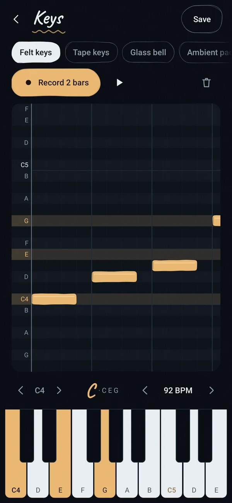

Nothing you make
is ever lost.

- the streetlights hum in B flat,
nobody else seems to hear it - I kept the porch light on for a ghost
- Hymn for the Night Bus
- your coat still smells like November,
I don't wash it, I don't wear it - if the river remembers, so will I
- everything I meant to tell you
fits inside a voicemail I never sent
The Iceberg is a small Android app for songwriters. It catches a line or a hum in seconds, lets it sink safely into the ice, and weeks or months later brings it back up to you.
Write it down.
A line in the shower, a melody on the night bus. Saved from the home screen before it can slip away.
Let it sink.
Life gets busy, and that's fine. It drifts into the ice and waits. Nothing expires, nothing nags you.
Get it back.
One quiet evening it comes back up, exactly as you left it, right when you need a spark.



Everything stays on your phone. No account, no cloud, no ads, and your words are never rewritten.
Why I'm making it
Most songs don't disappear because they're bad. They disappear because we're tired, or busy, or a little lazy that day, and the idea slips into a notes app nobody opens again.
I wanted a place that catches those pieces, keeps them safe, and then does the part nobody else does: brings them back to you. The half-song from last spring, the line from a sleepless night.
White Alpaca